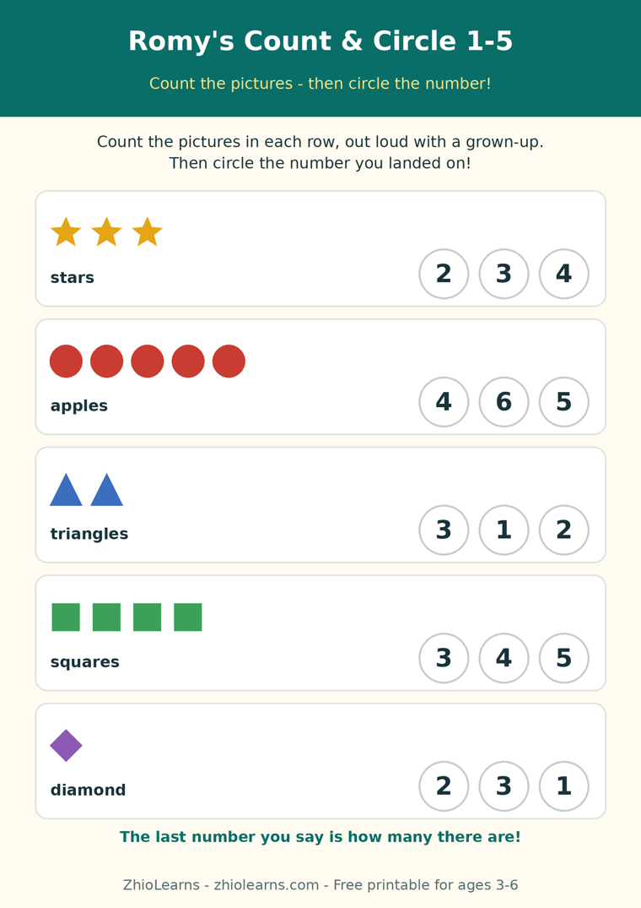

Guess First, Then Count: Why a Wild Guess Is Good Maths
Tomorrow at snack time, try changing one small thing. Put a handful of grapes on a plate — six, say, or seven — and before anyone touches them, ask: “How many do you think there are? You don’t have to be right. Just guess.”
Your child might say five. They might say twelve. A cheerful three-year-old might say a hundred. Smile at every one of those answers, because the guess is not the warm-up to the learning. The guess is the learning.
What a guess makes a small brain do
Counting, on its own, can become a performance: point, say a word, point, say a word, finish, look up for praise. A child can get very good at that routine while still being a little fuzzy about what the numbers actually describe.
A guess works differently. To guess, a child has to look at the whole group at once, take in “about how much” of it, and hold one number in mind as their own idea. Then counting stops being a recital and becomes an investigation: was my idea close? That loop — guess, count, compare — is one of the quiet roots of real number sense, and it costs you about ten extra seconds.
How to play it
Show. Put out a small group — four to nine grapes, berries, crackers or buttons. Small enough to count together without losing track.
Guess. “How many do you think? Just guess!” Guess out loud yourself, too — and be happily wrong sometimes.
Check. Count together, touching each one. End on the comparison, not the score: “You guessed six, and there were seven — so close!”
Two things keep it feeling like play. First, never correct a guess before the count — the count is the correction, and it arrives without anyone being told they were wrong. Second, let the wild guesses be funny. “A hundred” is a joke a small child is making on purpose at least half the time, and laughing together is what brings them back to the game tomorrow.
When the guesses start getting close
After a week or two of this, something lovely happens: the guesses tighten. Six grapes stop drawing “a hundred” and start drawing “five” or “eight”. Your child is not counting faster — they are seeing amounts more truly. That is estimation, and it is the same skill that will one day let them glance at a page of problems and sense whether an answer looks right.
Expect wobbles, too. Tired, hungry, excited children guess wildly, and that is information about their day, not about their maths. Keep the groups small, keep it short, and stop while it is still fun.
A counting book built for guessing
Romy’s Big Number Adventure, for ages 3–5, was made for exactly this game. Every page carries a big, friendly number and one clear group of things to count — perfect for pausing before the count and asking, “How many do you think Romy found?” Parents reach for it for preschool and kindergarten readiness; children just think they are adventuring with a raccoon.
Try it over a page tonight. Then print the free sheet below: count the pictures on each row, then circle the number you counted — guessing first, if your little one wants to.
🖨️ Free printable: Romy’s Count & Circle 1–10

Count the pictures on each row, then circle the number you counted. Two pages, ages 3–6, free, no sign-up needed to print it.
Download the free printable (PDF)📚 Today’s book
Find Romy’s Big Number Adventure and Romy’s other books in our little shop — and read Romy’s Alphabet Picnic free in the Storytime section.
See Romy’s books →🌿 More from the Parent Corner
Words stick best where they live — touch the real cup, knock on the real door, then find the same words in a book.
Touch It First, Then Find It in the Book →